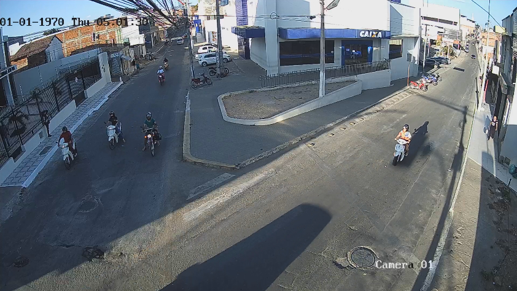
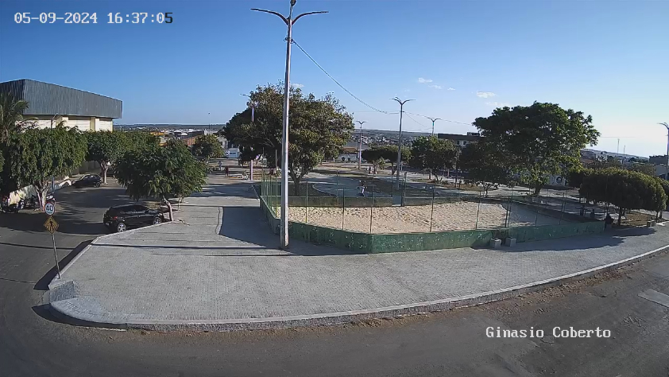
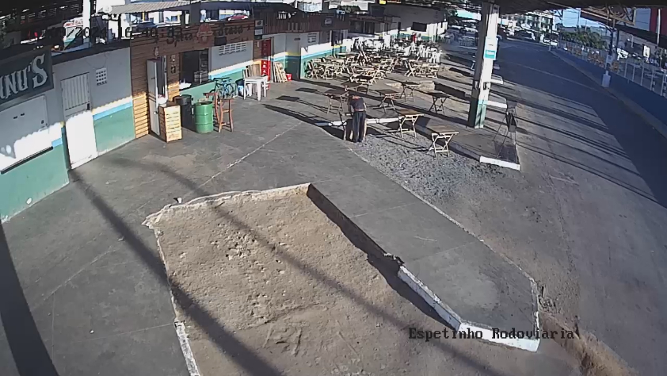
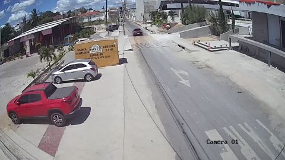
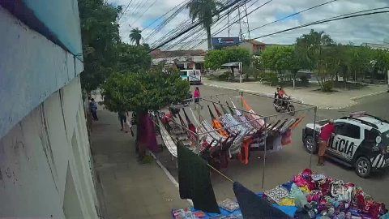

Opções de Câmera
-

Espetinho Rodoviária
81 views · 3 meses ago -

Caixa Econômica Federal
91 views · 3 meses ago -

Praça Adventista
73 views · 3 meses ago -

Espetinho Rodoviária
152 views · 1 ano ago -

Container Shopping
140 views · 1 ano ago -

Praça das Topics
119 views · 1 ano ago -

Vila Mariana
148 views · 1 ano ago